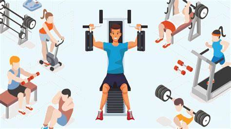

اكتشف برامج التمارين المتنوعة المصممة لمساعدتك على تحقيق أهدافك، سواء كنت مبتدئاً أو رياضياً متقدماً.
اكتشف برامج التمارين المتنوعة المصممة لمساعدتك على تحقيق أهدافك، سواء كنت مبتدئاً أو رياضياً متقدماً.
تساعدك تمارين القوة على بناء العضلات، زيادة القوة، وتحسين عملية الأيض. نقدم برامج للمبتدئين والمتوسطين والمتقدمين.
الفوائد: زيادة الكتلة العضلية، حرق سعرات حرارية أكبر، تحسين كثافة العظام.
التكرار الموصى به: 3-4 أيام في الأسبوع، مع يوم راحة بين الجلسات.
عرض برنامج القوةتمارين الكارديو ضرورية لصحة القلب والأوعية الدموية، حرق الدهون، وزيادة التحمل.
الفوائد: تحسين صحة القلب والرئة، زيادة القدرة على التحمل، المساعدة في خسارة الوزن.
التكرار الموصى به: 3-5 أيام في الأسبوع، 30-60 دقيقة لكل جلسة.
عرض برنامج الكارديوتحسين المرونة يساعد على تقليل خطر الإصابات، زيادة المدى الحركي للمفاصل، وتحسين الأداء الرياضي العام.
الفوائد: تقليل تصلب العضلات، زيادة المدى الحركي، تحسين الوضعية.
التكرار الموصى به: يومياً أو 3-5 أيام في الأسبوع.
عرض برنامج المرونةتواصل معنا للحصول على استشارة مجانية ولمساعدتك في اختيار البرنامج الأنسب لك.
اتصل بفادي